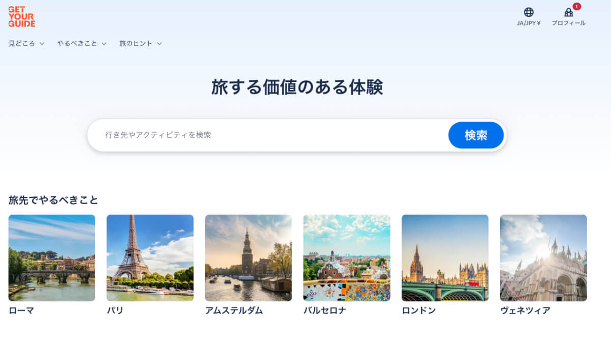
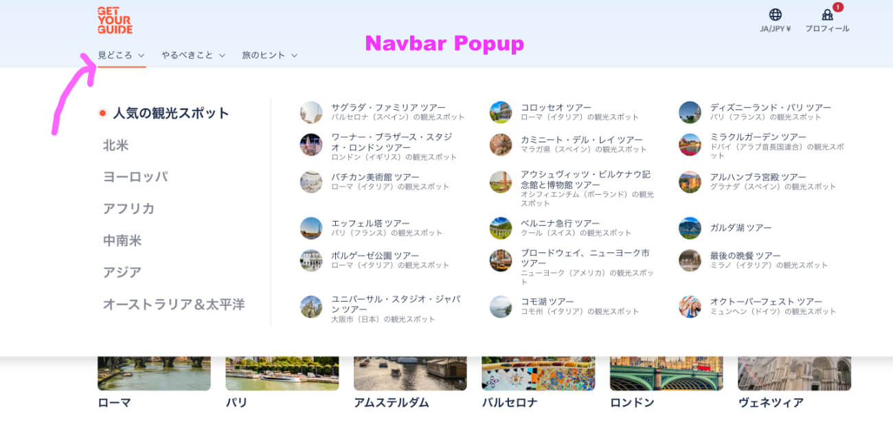
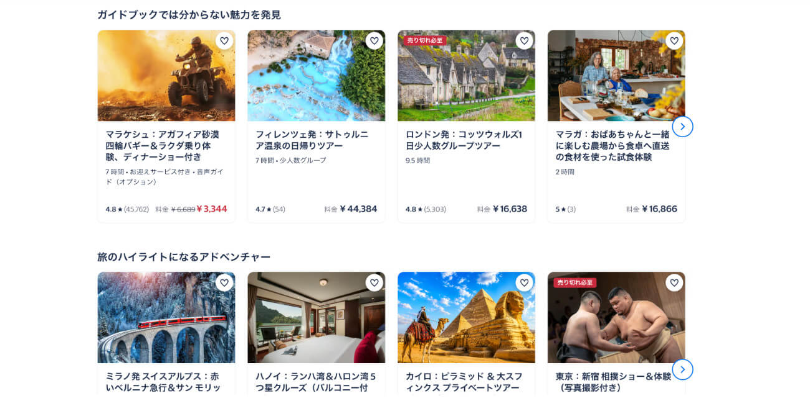

This is a website redesigning project where I aim to improve UX/UI and content.
Get Your Guide is an online travel agency(OTA), often called an aggregator site, lists thousands of tour packages, hotel and transportation listings by private vendors from all over the world. The business model of this type of site is algorithms.

Language: The texts and copy on the Japanese pages sound like they were auto translated and lack cultural flavor. Looking at English pages, I also got a sense that they are not very thought out to begin with.
UX/UI: It looks like the cards (countries, landmarks, destinations, etc. on the top page) are randomly selected (or the same in other markets). The content (graphics and copy) looks generic and is not perfectly personalized to Japanese users.
Looking at how the content is laid out, it seems the cards are laid out the same way as some of the other locals. Rome, Paris, Amsterdam, etc.

The nav menu 見どころ(highlight) and やるべきこと(Things to do) all sound literal translation of English. Not only that, if you hover over the 見どころ, you’ll see a popup with so many options.
On the left side are the regions of the world. On the right, you see destinations from all over the world listed.
From copywriting standpoint, 見どころ(highlight) sounds like “popular places to visit” which are listed on the right with popular landmarks all over the world mixed in an unorganized way.
It would make logical sense to let users choose a region or country first, then city and finally a destination. But the way it is laid out, you are bombarded with so much information with no hierarchy.
The regions of the world listed on the left are not “places to visit.” The options available in this popup are not very focused and can leave the visitors’ attention divided.

On the Home page, you see a random collection of cards - popular activities or places to visit - from left to right: Morocco, Italy, London, Spain, Egypt to Tokyo.
Some of the most popular countries to visit among Japanese tourists include South Korea, China, Taiwan and Thailand. They are all Asian countries so it makes sense to create a section for Asia. Other popular western cities/countries include Los Angeles, Paris, Sydney, London and New York.